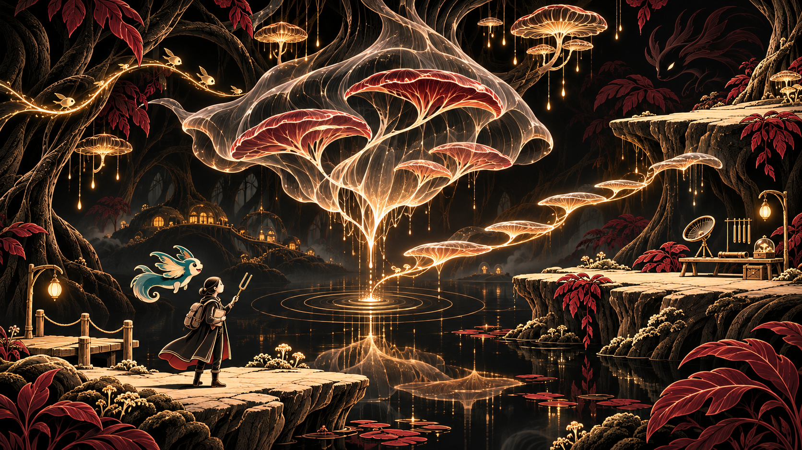
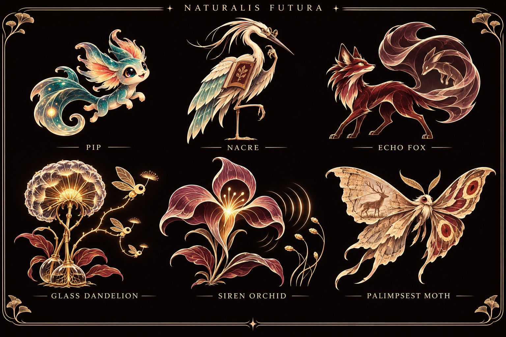
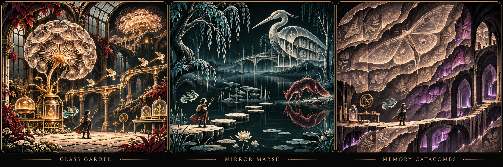
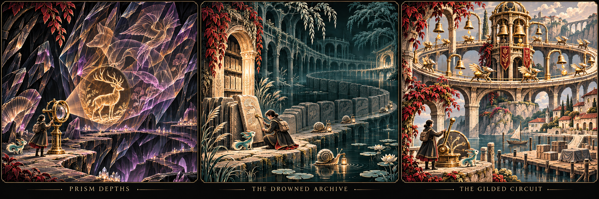
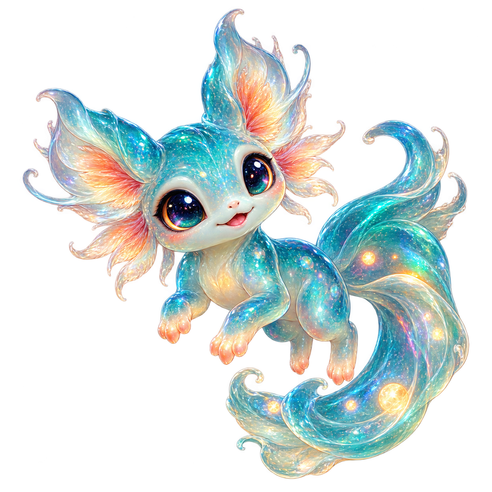
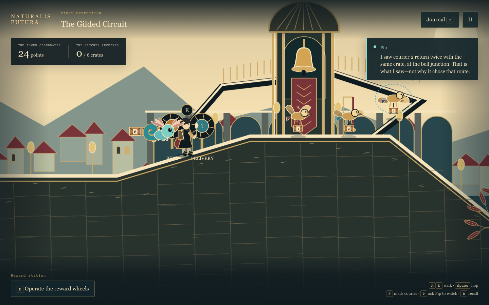

NATURALIS FUTURA · CREATIVE HANDOFF
A living field guide
you can walk into.
Explore unfamiliar minds with a small artificial companion. Observe, make instruments, test ideas and return with discoveries that change somebody’s life.
Direction overview · Receiving-agent brief · Prototype critique · Eight research landscapes
The Listening Grove
The emotional and visual anchor: intimate explorer, luminous ecology, depth and a companion.

A living bestiary
Pip, Nacre and four proposed species. Preserve identity; build behavior and animation.

Distinct territories
Different materials, silhouettes and ecological questions. These are concept studies.

Research becomes geography
Prism Depths, Drowned Archive and Gilded Circuit: behaviors to investigate, not just scenery.

Pip’s identity
An earlier pose reference. Adapt the rendering while preserving the recognizable creature.

Current prototype — NOT the finish target
The causal puzzle exists. The atmosphere, material detail and acting still need substantial work.
